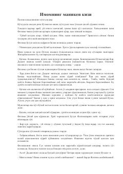

IMImom qizining kibr va norozilik bilan to'la hayoti haqida ibratli hikoya.
Imomning qizi Fotima kambag'al turmush sharoitidan norozi bo'lib, otasining kasbini kamsitadi va hayotdan shikoyat qiladi. Onasi Gul xonim esa sabr-toqat va hikmat bilan qiziga hayotning haqiqiy qiymatini tushuntirishga harakat qiladi. Asar yoshlarning kibr, norozilik va axloqiy kamolot mavzularini yoritadi.